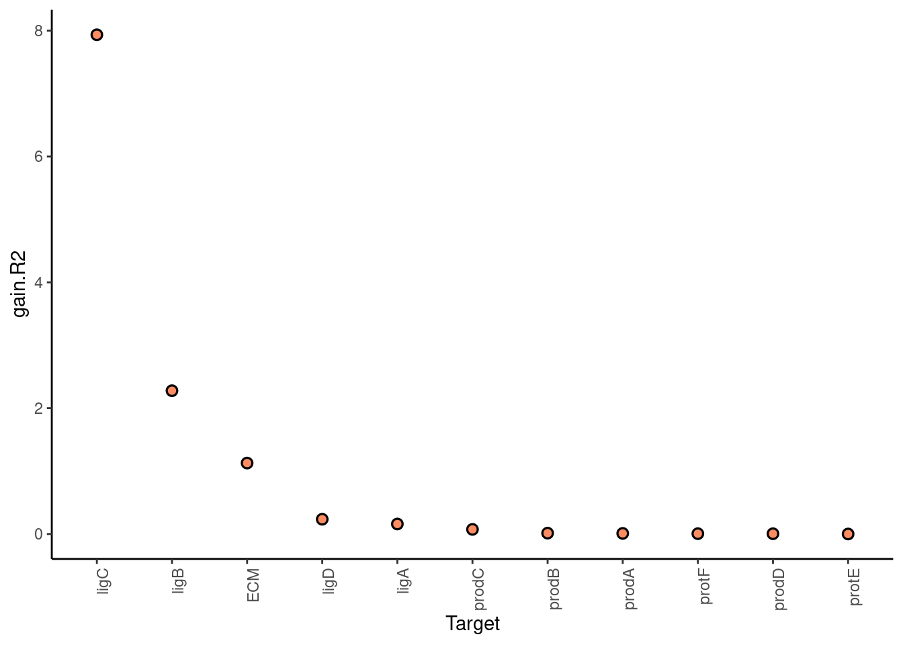
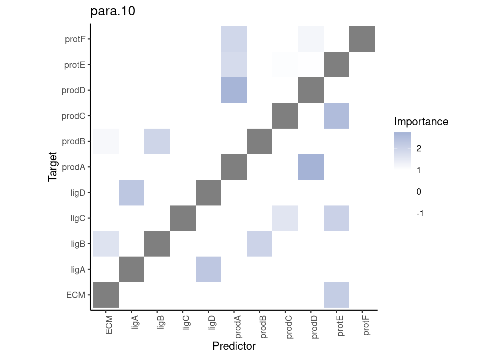
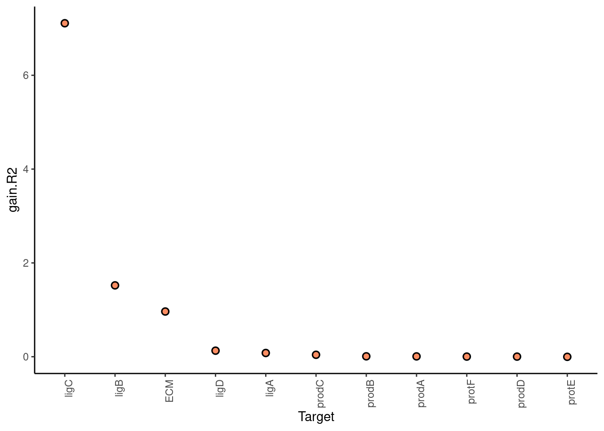
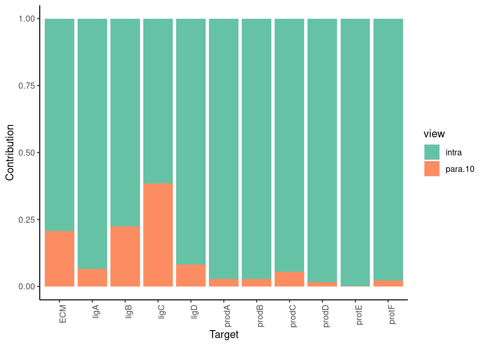
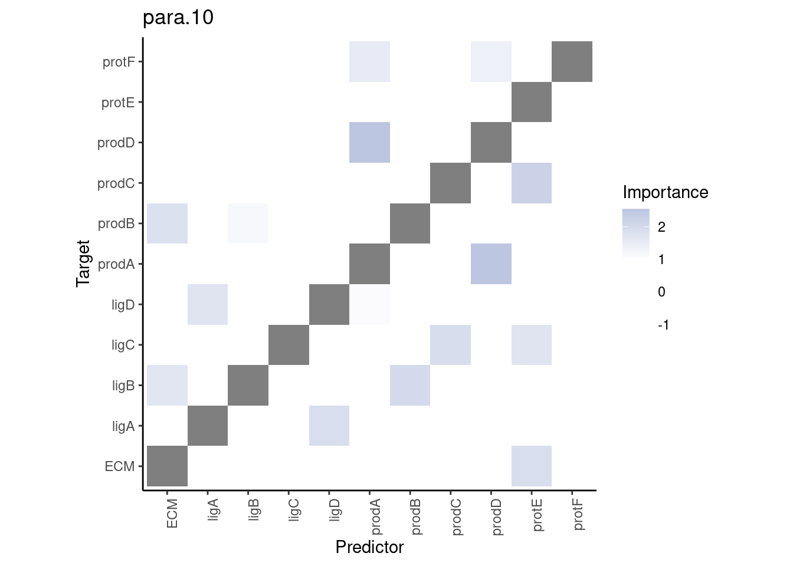
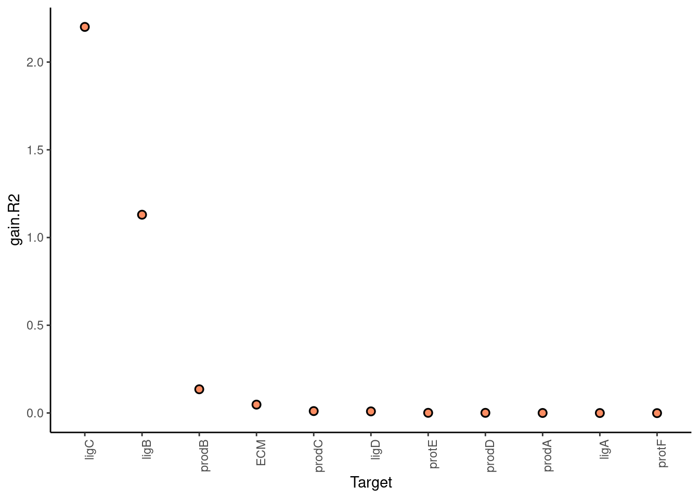
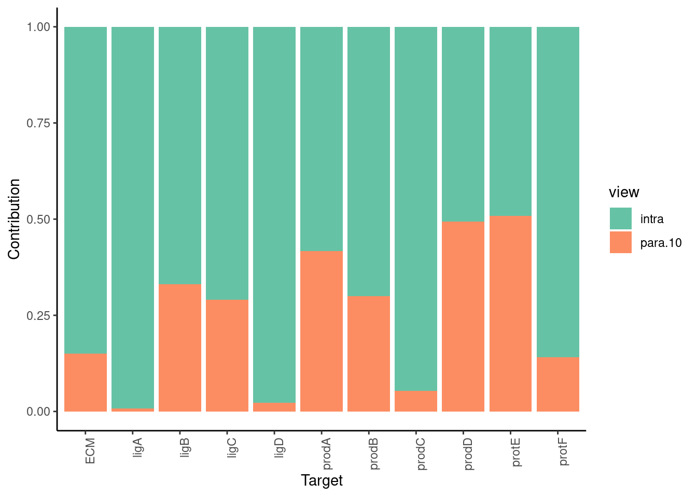
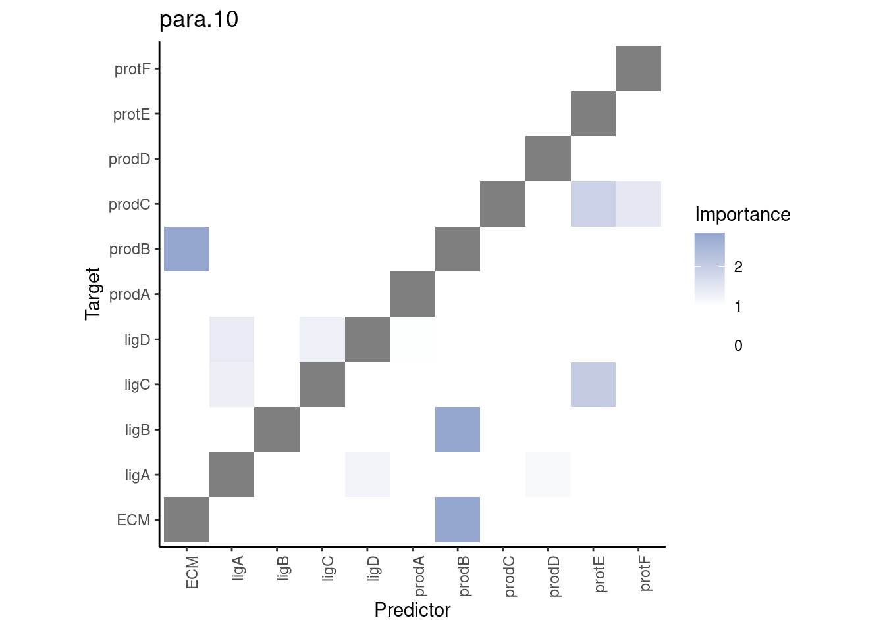

Methods
Last updated: 2021-12-26
Checks: 6 1
Knit directory: report/
This reproducible R Markdown analysis was created with workflowr (version 1.6.2). The Checks tab describes the reproducibility checks that were applied when the results were created. The Past versions tab lists the development history.
Great! Since the R Markdown file has been committed to the Git repository, you know the exact version of the code that produced these results.
Great job! The global environment was empty. Objects defined in the global environment can affect the analysis in your R Markdown file in unknown ways. For reproduciblity it’s best to always run the code in an empty environment.
The command set.seed(20211125) was run prior to running the code in the R Markdown file. Setting a seed ensures that any results that rely on randomness, e.g. subsampling or permutations, are reproducible.
Great job! Recording the operating system, R version, and package versions is critical for reproducibility.
Nice! There were no cached chunks for this analysis, so you can be confident that you successfully produced the results during this run.
Using absolute paths to the files within your workflowr project makes it difficult for you and others to run your code on a different machine. Change the absolute path(s) below to the suggested relative path(s) to make your code more reproducible.
| absolute | relative |
|---|---|
| ~/Saez/report | . |
Great! You are using Git for version control. Tracking code development and connecting the code version to the results is critical for reproducibility.
The results in this page were generated with repository version d5c3ed8. See the Past versions tab to see a history of the changes made to the R Markdown and HTML files.
Note that you need to be careful to ensure that all relevant files for the analysis have been committed to Git prior to generating the results (you can use wflow_publish or wflow_git_commit). workflowr only checks the R Markdown file, but you know if there are other scripts or data files that it depends on. Below is the status of the Git repository when the results were generated:
Ignored files:
Ignored: data/imc/
Ignored: data/merfish_bc/
Ignored: data/merfish_liver/
Ignored: data/merfish_preoptic/
Ignored: data/mibi_tnbc/
Ignored: data/seqfishp_brain/
Ignored: output/2021-12-25-09-41_all_views.RDS
Ignored: output/2021-12-25-09-42_all_results.RDS
Ignored: output/case_study_A/
Ignored: output/case_study_B/
Ignored: results/
Untracked files:
Untracked: analysis/eda_merfish_preoptic.Rmd
Note that any generated files, e.g. HTML, png, CSS, etc., are not included in this status report because it is ok for generated content to have uncommitted changes.
These are the previous versions of the repository in which changes were made to the R Markdown (analysis/tutorial.Rmd) and HTML (docs/tutorial.html) files. If you’ve configured a remote Git repository (see ?wflow_git_remote), click on the hyperlinks in the table below to view the files as they were in that past version.
| File | Version | Author | Date | Message |
|---|---|---|---|---|
| Rmd | 498e920 | schae211 | 2021-12-23 | changing to relative paths |
| html | 781ba63 | schae211 | 2021-12-21 | Build site. |
| html | e9c0076 | schae211 | 2021-12-18 | Build site. |
| html | 1710d80 | schae211 | 2021-12-15 | Build site. |
| Rmd | eb7b59d | schae211 | 2021-12-15 | wflow_publish(all = TRUE, republish = TRUE) |
| html | f72d59c | schae211 | 2021-12-15 | Build site. |
| html | c428797 | schae211 | 2021-12-15 | Build site. |
| Rmd | f14d98f | schae211 | 2021-12-15 | wflow_publish(all = TRUE, republish = TRUE) |
| html | 2679775 | schae211 | 2021-12-08 | Build site. |
| Rmd | dda0a9a | schae211 | 2021-12-08 | wflow_publish("analysis/tutorial.Rmd") |
| html | 067350b | schae211 | 2021-12-02 | Build site. |
| html | b68d23d | schae211 | 2021-12-02 | Build site. |
| Rmd | 565f4e0 | schae211 | 2021-12-02 | wflow_publish(all = TRUE, republish = TRUE) |
| html | 6751419 | schae211 | 2021-12-02 | Build site. |
| Rmd | 70f04f3 | schae211 | 2021-12-02 | wflow_publish(files = "analysis/tutorial.Rmd") |
Setup.
knitr::opts_chunk$set(echo = TRUE, collapse = TRUE)
#knitr::opts_knit$set(root.dir = "~/Saez/report")Loaded packages.
suppressPackageStartupMessages(library(mistyR))
suppressPackageStartupMessages(library(future))
suppressPackageStartupMessages(library(tidyverse))
plan("multisession", workers=14)Introduction
In this tutorial, I will briefly explain how I envision the new MISTy workflow. Instead of only offering a pre-defined set of ML algorithms to model each view, I refactored the code such that users can supply their own function if they would like. If not, we ship MISTy with several implemented functions such as gradient boosting that can simply be plugged into the model. More details can be found below.
Data
For the sake of this tutorial we will be using the synthetic dataset supplied in the MISTy package. As explained in the Get Started Vignette, this dataset is based on a two-dimensional cellular automata model which models the production, diffusion, degradation and interactions of 11 molecular species in 4 different cell types.
In total there are 10 tibbles, each of which contains about 4000 cells and their corresponding expresssion, and position in a 100x100 grid (randomly assigned) as well as the cell type identity. (For more information see help("synthetic")).
data("synthetic")MISTy Views
For the sake of keeping things simply, we will only look at the first instance of the synthetic dataset for now.
We will start by creating two MISTy views: a) Intraview and b) Paraview with a Gaussian kernel (default) and a radius of 10.
expr <- synthetic$synthetic1 %>% dplyr::select(-c(row, col, type))
pos <- synthetic$synthetic1 %>% dplyr::select(c(row, col))
misty.views <- expr %>%
create_initial_view() %>%
add_paraview(l = 10, positions = pos)
Generating paraviewRunning MISty
The default ML algorithm is still random forest and thus we do not even have to specify it.
misty.run <- misty.views %>%
run_misty()
Training modelsTo make things more explicitly the above call is the same as:
misty.run <- misty.views %>%
run_misty(model.function = random_forest_model)
Training modelsBut what is this random_forest_model actually?
random_forest_model
Warning in getSrcLines(srcfile, x[7L], x[8L]): strings not representable in
native encoding will be translated to UTF-8
function(view_data, target, seed, ...) {
ellipsis.args <- list(...)
# default ranger arguments
algo.arguments <- list(
formula = stats::as.formula(paste0(target, " ~ .")),
data = view_data,
num.trees = 100,
importance = "impurity",
mtry = NULL,
verbose = FALSE,
num.threads = 1,
seed = seed
)
if (!(length(ellipsis.args) == 0)) {
algo.arguments <- merge_two(algo.arguments, ellipsis.args)
}
model <- do.call(ranger::ranger, algo.arguments)
predictions <- tibble::tibble(
index = seq_len(nrow(view_data)),
prediction = model$predictions
)
list(
unbiased.predictions = predictions,
importances = model$variable.importance
)
}
<bytecode: 0x5643ac00e908>
<environment: namespace:mistyR>It is a function that takes in the data of a single view, for example the paraview -
misty.views$paraview.10$data %>% slice_head(n=6)and models the target variable with the RF algorithm. Importantly, within the run_misty function before the view_data are supplied to the random_forest_model, the target column is replaced by the actual values from the intraview.
So assuming the target is “ECM” the following happens within the MISTy framework.
target <- "ECM"
expr <- misty.views$intraview$data
target.vector <- expr %>% dplyr::pull(target)
view_data <- misty.views$paraview.10$data %>%
mutate(!!target := target.vector)
# compare to the above
view_data %>% slice_head(n=6)And then the RF algorithm is called with the default algorithms merged with the additional ellipsis arguments.
seed <- 42 # default
ellipsis.args <- list() # assume no ellipsis arguments were given
# default ranger arguments
algo.arguments <- list(
formula = stats::as.formula(paste0(target, " ~ .")),
data = view_data,
num.trees = 100,
importance = "impurity",
mtry = NULL,
verbose = FALSE,
num.threads = 1,
seed = seed)
if (!(length(ellipsis.args) == 0)) {
algo.arguments <- merge_2(algo.arguments, ellipsis.args)
}
model <- do.call(ranger::ranger, algo.arguments)
predictions <- tibble::tibble(index = seq_len(nrow(view_data)),
prediction = model$predictions)
list(unbiased.predictions = predictions,
importances = model$variable.importance) %>%
str() # add str here to show output
List of 2
$ unbiased.predictions: tibble [4,205 x 2] (S3: tbl_df/tbl/data.frame)
..$ index : int [1:4205] 1 2 3 4 5 6 7 8 9 10 ...
..$ prediction: num [1:4205] 0.141 0.115 0.266 0.673 0.494 ...
$ importances : Named num [1:10] 54.1 60.9 60.3 49.9 69 ...
..- attr(*, "names")= chr [1:10] "ligA" "ligB" "ligC" "ligD" ...(Note that merge_2 is a function that is also exported by mistyR)
As seen above, we can also easily supply arguments to the ranger RF implementation. Say we would like to increase the number of trees and use another splitrule. Let’s compare the runtime for example (should be higher with more trees).
tictoc::tic()
misty.run <- misty.views %>%
run_misty(model.function = random_forest_model, num.trees = 500,
splitrule = "extratrees")
Training models
tictoc::toc()
4.532 sec elapsedtictoc::tic()
misty.run <- misty.views %>%
run_misty(model.function = random_forest_model, num.trees = 100,
splitrule = "extratrees")
Training models
tictoc::toc()
1.801 sec elapsedMISTy results
On the side of processing and plotting the results nothing has changed.
misty.results <- collect_results(misty.run)
Collecting improvements
Collecting contributions
Collecting importances
Aggregating
misty.results %>%
plot_improvement_stats("gain.R2") %>%
plot_view_contributions() %>%
plot_interaction_heatmap("para.10")
Warning: Removed 11 rows containing missing values (geom_segment).

Below all the supplied function will be desribed in more detail.
All Supplied Functions
Random Forest
Short description of the algorithm: A classical ensemble model consisting on regression trees which are training with boostrapped samples (bagging). In addition the constitutent trees are further “decorrelated” by only considering a random subset of the features at each split.
Unbiased predictions are based on OOB predictions.
random_forest_model
function(view_data, target, seed, ...) {
ellipsis.args <- list(...)
# default ranger arguments
algo.arguments <- list(
formula = stats::as.formula(paste0(target, " ~ .")),
data = view_data,
num.trees = 100,
importance = "impurity",
mtry = NULL,
verbose = FALSE,
num.threads = 1,
seed = seed
)
if (!(length(ellipsis.args) == 0)) {
algo.arguments <- merge_two(algo.arguments, ellipsis.args)
}
model <- do.call(ranger::ranger, algo.arguments)
predictions <- tibble::tibble(
index = seq_len(nrow(view_data)),
prediction = model$predictions
)
list(
unbiased.predictions = predictions,
importances = model$variable.importance
)
}
<bytecode: 0x5643ac00e908>
<environment: namespace:mistyR>- Running the model
misty.views %>%
run_misty(model.function = random_forest_model) %>%
collect_results() %>%
plot_improvement_stats("gain.R2") %>%
plot_view_contributions() %>%
plot_interaction_heatmap("para.10")
Training models
Collecting improvements
Collecting contributions
Collecting importances
Aggregating
Warning: Removed 11 rows containing missing values (geom_segment).


Gradient Boosting
Short description:
Unbiased predictions are based on k-fold cross-validation (aggregarted predictions for the holdout sets)
gradient_boosting_model
function(view_data, target, seed, k = 10, ...) {
assertthat::assert_that(requireNamespace("xgboost", quietly = TRUE),
msg = "The package xgboost is required to use gradient boosting"
)
ellipsis.args <- list(...)
folds <- withr::with_seed(
seed,
caret::createFolds(seq.int(1, nrow(view_data)), k = k)
)
holdout.predictions <- purrr::map_dfr(folds, function(holdout) {
in.fold <- seq.int(1, nrow(view_data))[!(seq.int(1, nrow(view_data)) %in% holdout)]
train <- view_data[in.fold, ]
test <- view_data[holdout, ]
pred.train <- train %>%
dplyr::select(-tidyselect::all_of(target)) %>%
as.matrix()
label.train <- train %>% dplyr::pull(tidyselect::all_of(target))
algo.arguments <- list(
data = pred.train,
label = label.train,
booster = "gbtree",
nrounds = 10,
verbose = 0,
objective = "reg:squarederror",
nthread = 1
)
if (!(length(ellipsis.args) == 0)) {
algo.arguments <- merge_two(algo.arguments, ellipsis.args)
}
model <- do.call(xgboost::xgboost, algo.arguments)
pred.test <- test %>%
dplyr::select(-tidyselect::all_of(target)) %>%
as.matrix()
label.hat <- predict(model, pred.test)
tibble::tibble(index = holdout, prediction = label.hat)
}) %>% dplyr::arrange(index)
predictors <- view_data %>%
dplyr::select(-tidyselect::all_of(target)) %>%
as.matrix()
labels <- view_data %>% dplyr::pull(tidyselect::all_of(target))
algo.arguments.wm <- list(
data = predictors,
label = labels,
booster = "gbtree",
nrounds = 10,
verbose = 0,
objective = "reg:squarederror",
nthread = 1
)
if (!(length(ellipsis.args) == 0)) {
algo.arguments.wm <- merge_two(algo.arguments.wm, ellipsis.args)
}
whole.model <- do.call(xgboost::xgboost, algo.arguments.wm)
# if bypass intra is true, we need to catch the error
importances <- tryCatch(
{
importance_matrix <- xgboost::xgb.importance(model = whole.model)
importances <- unlist(importance_matrix[, "Gain"])
names(importances) <- unlist(importance_matrix[, "Feature"])
importances
},
error = function(cond) {
importances <- rep(0, ncol(predictors))
names(importances) <- colnames(predictors)
importances
}
)
list(
unbiased.predictions = holdout.predictions,
importances = importances
)
}
<bytecode: 0x5643bb80e270>
<environment: namespace:mistyR>- Running the model:
misty.views %>%
run_misty(model.function = gradient_boosting_model) %>%
collect_results() %>%
plot_improvement_stats("gain.R2") %>%
plot_view_contributions() %>%
plot_interaction_heatmap("para.10")
Training models
Collecting improvements
Collecting contributions
Collecting importances
Aggregating
Warning: Removed 11 rows containing missing values (geom_segment).


MARS
MARS: Multivariate Adaptive Regression Splines
Short description: Each (included) predictor is split into a pair of hinge functions which are then added to a linear regression model in the forward pass. In the backward pass model terms are deleted based on the GCV (generalized cross-validation) (=prunning). However, one can also increase the degree of interaction (
degree) such that the constructed features are not single hinge functions but products of 2 (or more) hinge functions.Unbiased predictions are based on k-fold cross-validation (aggregarted predictions for the holdout sets)
The name
bagged_earth_modelcomes from the fact that the name mars is protected and thus the implementation of the algorithm is calledearth(by Stephen Milborrow, derived from mda::mars by Trevor Hastie and Robert Tibshirani)
mars_model
function(view_data, target, seed, approx = 1.0, k = 10, ...) {
assertthat::assert_that(requireNamespace("earth", quietly = TRUE),
msg = "The package earth is required to use mars"
)
ellipsis.args <- list(...)
folds <- withr::with_seed(
seed,
caret::createFolds(seq.int(1, nrow(view_data)), k = k)
)
holdout.predictions <- purrr::map_dfr(folds, function(holdout) {
in.fold <- seq.int(1, nrow(view_data))[!(seq.int(1, nrow(view_data)) %in% holdout)]
# subsampling to reduce the computational cost
if (approx != 1) in.fold <- sample(in.fold, length(in.fold) * approx)
train <- view_data[in.fold, ]
test <- view_data[holdout, ]
algo.arguments <- list(
formula = stats::as.formula(paste0(target, " ~ .")),
data = train,
degree = 2
)
if (!(length(ellipsis.args) == 0)) {
algo.arguments <- merge_two(algo.arguments, ellipsis.args)
}
model <- do.call(earth::earth, algo.arguments)
label.hat <- predict(model, test)
tibble::tibble(index = holdout, prediction = label.hat[,1])
}) %>% dplyr::arrange(index)
algo.arguments.wm <- list(
formula = stats::as.formula(paste0(target, " ~ .")),
data = view_data,
degree = 2
)
if (!(length(ellipsis.args) == 0)) {
algo.arguments.wm <- merge_two(algo.arguments.wm, ellipsis.args)
}
whole.model <- do.call(earth::earth, algo.arguments.wm)
importances <- earth::evimp(whole.model, trim = FALSE, sqrt. = TRUE)[, 6]
names(importances) <- stringr::str_remove(names(importances), "-unused")
# fix for bypass intra
if (all(is.na(names(importances)))) importances <- c("no.var" = 0)
list(
unbiased.predictions = holdout.predictions,
importances = importances
)
}
<bytecode: 0x5643b1aad8d0>
<environment: namespace:mistyR>misty.views %>%
run_misty(model.function = mars_model) %>%
collect_results() %>%
plot_improvement_stats("gain.R2") %>%
plot_view_contributions() %>%
plot_interaction_heatmap("para.10")
Training models
Collecting improvements
Collecting contributions
Collecting importances
Aggregating
Warning: Removed 11 rows containing missing values (geom_segment).


Bagged MARS
MARS: Multivariate Adaptive Regression Splines
Short description: Each (included) predictor is split into a pair of hinge functions which are then added to a linear regression model in the forward pass. In the backward pass model terms are deleted based on the GCV (generalized cross-validation) (=prunning). However, one can also increase the degree of interaction (
degree) such that the constructed features are not single hinge functions but products of 2 (or more) hinge functions.Unbiased predictions are based on OOB predictions.
The name
bagged_earth_modelcomes from the fact that the name mars is protected and thus the implementation of the algorithm is calledearth(by Stephen Milborrow, derived from mda::mars by Trevor Hastie and Robert Tibshirani)
bagged_mars_model
function(view_data, target, seed,
n.bags = 50, ...) {
assertthat::assert_that(requireNamespace("earth", quietly = TRUE),
msg = "The package earth is required to use mars"
)
ellipsis.args <- list(...)
# generate the bags
bags <- withr::with_seed(
seed,
caret::createResample(1:nrow(view_data), times = n.bags)
)
# build one model for each bag, return oob predictions and importances
models <- purrr::map(bags, function(bag) {
algo.arguments <- list(
formula = stats::as.formula(paste0(target, " ~ .")),
data = view_data[bag, ],
degree = 2
)
if (!(length(ellipsis.args) == 0)) {
algo.arguments <- merge_two(algo.arguments, ellipsis.args)
}
model <- do.call(earth::earth, algo.arguments)
oob <- seq.int(1, nrow(view_data))[!(seq.int(1, nrow(view_data)) %in% bag)]
pred <- predict(model, view_data[oob, ])
list(
model = model,
prediction = tibble::tibble(index = oob, prediction = as.vector(pred))
)
})
# Generate the OOB predictions, using the average for each sample
predictions <- purrr::map_dfr(models, function(model) {
tibble::tibble(model$prediction)
}) %>%
dplyr::group_by(index) %>%
dplyr::summarise(prediction = mean(prediction)) %>%
dplyr::arrange(index)
assertthat::assert_that(nrow(predictions) == nrow(view_data),
msg = "There are too few bags to get OOB predictions for all observations.
Consider increasing the number of bags or using CV."
)
importances <- purrr::map_dfr(models, function(model) {
coefs <- earth::evimp(model$model, trim = FALSE, sqrt. = TRUE)[, 6]
names(coefs) <- stringr::str_remove(names(coefs), "-unused")
# fix for bypass intra
names(coefs) <- ifelse(is.na(names(coefs)), "no.var", names(coefs))
coefs
}) %>% colMeans(na.rm = TRUE)
list(
unbiased.predictions = predictions,
importances = importances
)
}
<bytecode: 0x5643b7e39f28>
<environment: namespace:mistyR>- Running the model:
misty.views %>%
run_misty(model.function = bagged_mars_model) %>%
collect_results() %>%
plot_improvement_stats("gain.R2") %>%
plot_view_contributions() %>%
plot_interaction_heatmap("para.10")
Training models
Collecting improvements
Collecting contributions
Collecting importances
Aggregating
Warning: Removed 11 rows containing missing values (geom_segment).


Linear Model
Short description: Simple multivariate linear regression. Fast and good interpretability, but cannot account for non-linear interactions.
Unbiased predictions are based on k-fold cross-validation (aggregated predictions for the holdout sets)
In particular this model was supplied to understand more easily, how a view-specifc model based on cross-validation can be constructed
linear_model
function(view_data, target, seed, k = 10, ...) {
folds <- withr::with_seed(
seed,
caret::createFolds(seq.int(1, nrow(view_data)), k = k)
)
holdout.predictions <- purrr::map_dfr(folds, function(holdout) {
in.fold <- seq.int(1, nrow(view_data))[!(seq.int(1, nrow(view_data)) %in% holdout)]
algo.arguments <- list(
formula = stats::as.formula(paste0(target, " ~ .")),
data = view_data[in.fold, ]
)
model <- do.call(stats::lm, algo.arguments)
pred <- predict.lm(model, view_data[holdout, ])
tibble::tibble(index = holdout, prediction = as.vector(pred))
}) %>% dplyr::arrange(index)
algo.arguments.wm <- list(
formula = stats::as.formula(paste0(target, " ~ .")),
data = view_data
)
whole.model <- do.call(stats::lm, algo.arguments.wm)
importances <- whole.model$coefficients[names(whole.model$coefficients) != "(Intercept)"]
# fix for bypass intra (replace NA with 0 for consistent behavior)
importances <- ifelse(is.na(importances), 0, importances)
list(
unbiased.predictions = holdout.predictions,
importances = importances
)
}
<bytecode: 0x5643b82ab4a0>
<environment: namespace:mistyR>- Running the model:
misty.views %>%
run_misty(model.function = linear_model) %>%
collect_results() %>%
plot_improvement_stats("gain.R2") %>%
plot_view_contributions() %>%
plot_interaction_heatmap("para.10")
Training models
Collecting improvements
Collecting contributions
Collecting importances
Aggregating
Warning: Removed 11 rows containing missing values (geom_segment).


Support Vector Machine
Short description: In regression setting the support vector machine can be framed as a robust regression technique that is less sensitive to outliers that linear regression (with squared deviation as loss function). The prediction is based on a weighted sum of the training instances that are a certain threshold (\(\epsilon\)) away (= support vectors) from the regression line and the loss function penalizes both the residuals and the sum of squared coefficients.
Unbiased predictions are based on k-fold cross-validation (aggregarted predictions for the holdout sets)
Importantly, we added an approximation argument to the implementation which basically says at what fraction of the training instances the SVM will be trained on. This drastically decreases the training time and does not really effect the performance.
svm_model
function(view_data, target, seed, approx = 0.4, k = 10, ...) {
assertthat::assert_that(requireNamespace("kernlab", quietly = TRUE),
msg = "The package kernlab is required to use linear SVM"
)
ellipsis.args <- list(...)
folds <- withr::with_seed(
seed,
caret::createFolds(seq.int(1, nrow(view_data)), k = k)
)
holdout.predictions <- purrr::map_dfr(folds, function(holdout) {
in.fold <- seq.int(1, nrow(view_data))[!(seq.int(1, nrow(view_data)) %in% holdout)]
# subsampling to reduce the computational cost
if (approx != 1) in.fold <- sample(in.fold, length(in.fold) * approx)
algo.arguments <- list(
x = stats::as.formula(paste0(target, " ~ .")),
data = view_data[in.fold, ],
kernel = "vanilladot",
C = 1,
type = "eps-svr",
kpar = list() # no hyperparameters for linear kernel
)
if (!(length(ellipsis.args) == 0)) {
algo.arguments <- merge_two(algo.arguments, ellipsis.args)
}
model <- do.call(kernlab::ksvm, algo.arguments)
pred <- kernlab::predict(model, view_data[holdout, ])
tibble::tibble(index = holdout, prediction = as.vector(pred))
}) %>% dplyr::arrange(index)
algo.arguments.wm <- list(
x = stats::as.formula(paste0(target, " ~ .")),
data = view_data,
kernel = "vanilladot",
C = 1,
type = "eps-svr",
kpar = list() # no hyperparameters for linear kernel
)
if (!(length(ellipsis.args) == 0)) {
algo.arguments.wm <- merge_two(algo.arguments.wm, ellipsis.args)
}
whole.model <- do.call(kernlab::ksvm, algo.arguments.wm)
importances <- (t(whole.model@coef) %*% whole.model@xmatrix)[1, ]
# fix for bypass intra
if (is.null(names(importances))) importances <- c("no.var" = 0)
list(
unbiased.predictions = holdout.predictions,
importances = importances
)
}
<bytecode: 0x5643ae1e2268>
<environment: namespace:mistyR>- Running the model:
misty.views %>%
run_misty(model.function = svm_model) %>%
collect_results() %>%
plot_improvement_stats("gain.R2") %>%
plot_view_contributions() %>%
plot_interaction_heatmap("para.10")
Training models
Collecting improvements
Collecting contributions
Collecting importances
Aggregating
Warning: Removed 11 rows containing missing values (geom_segment).


Multi-layer Perceptron
Short description: A small fully connected feedforward network, trained using standard backpropagation (no batches?). Default activation function is logistic.
Unbiased predictions are based on k-fold cross-validation (aggregarted predictions for the holdout sets)
Importantly, the feature importances is here calculated based on a global model agnostic method. More specifically each feature is permuated (one at a time) and then the reduction in preditive performance is used as measure for the variable importance. (This is achieved using the
imlR package).
mlp_model
function(view_data, target, seed, approx = 0.6, k = 10, ...) {
assertthat::assert_that(requireNamespace("RSNNS", quietly = TRUE),
msg = "The package RSNNS is required to use mlp"
)
ellipsis.args <- list(...)
folds <- withr::with_seed(
seed,
caret::createFolds(seq.int(1, nrow(view_data)), k = k)
)
predictors <- colnames(view_data)[colnames(view_data) != target]
X <- view_data %>%
dplyr::select(tidyselect::all_of(predictors)) %>%
as.matrix()
Y <- view_data %>% dplyr::pull(target)
# made this an imap to track the folds!
holdout.predictions <- purrr::map_dfr(folds, function(holdout) {
in.fold <- seq.int(1, nrow(view_data))[!(seq.int(1, nrow(view_data)) %in% holdout)]
# subsampling to reduce the computational cost
if (approx != 1) in.fold <- sample(in.fold, length(in.fold) * approx)
X_train <- X[in.fold, ] %>% as.matrix()
Y_train <- Y[in.fold]
X_test <- X[holdout, ] %>% as.matrix()
Y_test <- Y[holdout]
algo.arguments <- list(
x = X_train,
y = Y_train,
size = c(10)
)
if (!(length(ellipsis.args) == 0)) {
algo.arguments <- merge_two(algo.arguments, ellipsis.args)
}
model <- do.call(RSNNS::mlp, algo.arguments)
label.hat <- predict(model, X_test)
tibble::tibble(index = holdout, prediction = label.hat[,1])
}) %>% dplyr::arrange(index)
algo.arguments.wm <- list(
x = X,
y = Y,
size = c(10)
)
if (!(length(ellipsis.args) == 0)) {
algo.arguments.wm <- merge_two(algo.arguments.wm, ellipsis.args)
}
whole.model <- do.call(RSNNS::mlp, algo.arguments.wm)
# fix for bypass intra (or in general if there is only a single predictor)
if (ncol(X) == 1) {
importances <- c("no.var" = 0)
} else {
predictor <- iml::Predictor$new(
model = whole.model,
data = as.data.frame(X),
y = Y
)
imp <- iml::FeatureImp$new(predictor, loss = "mse")$results
importances <- imp$importance
names(importances) <- imp$feature
}
list(
unbiased.predictions = holdout.predictions,
importances = importances
)
}
<bytecode: 0x5643b9941e20>
<environment: namespace:mistyR>- Running the model:
misty.views %>%
run_misty(model.function = mlp_model,
k = 10, approx.frac = 0.5) %>%
collect_results() %>%
plot_improvement_stats("gain.R2") %>%
plot_view_contributions() %>%
plot_interaction_heatmap("para.10")
Training models
Collecting improvements
Collecting contributions
Collecting importances
Aggregating
Warning: Removed 11 rows containing missing values (geom_segment).


How to construct you own function
- To construct a view-specific function we need to clearly state the expected input and output to the function.
Input
The input will be:
view_data: A tibble with each row corresponding to a spatial unit (e.g. Visium spot or single cell) and each column corresponding to a marker.
Based on the assert statements in run_misty, one can be sure that the variance of each target is non-zero.
For example the intraview from above.
misty.views$intraview$data %>% slice_head(n=6)target: String corresponding to the marker which should be modeled.
For example “ECM”
seed: Integer (passed down fromrun_misty)
Default seed is 42.
Output
The output must be a named list comprising of:
unbiased.predictions: Tibble with one column calledindexfor the “cell id” and another column calledpredictionfor the unbiased prediction.
These unbiased predictions for the specified target can either come from the aggregated out-of-bag (OOB) predictions of a bagged ensembl model or the aggregated predictions for holdout set for k-fold cross-validation.
The unbiased predictions are needed as input for the linear fusion model, which combined the unbiased predictions from each view-specific model to assess the contribution from each view (using the coefficients).
importances: Named Vector with the importances of the predictors as values and the names of the predictors as names (see the example below)
For example let’s have a look at the result list returned by the ranger model.
res.list <- random_forest_model(view_data = misty.views$intraview$data,
target = "ECM",
seed = 42)
str(res.list)
List of 2
$ unbiased.predictions: tibble [4,205 x 2] (S3: tbl_df/tbl/data.frame)
..$ index : int [1:4205] 1 2 3 4 5 6 7 8 9 10 ...
..$ prediction: num [1:4205] 0.0563 0.0952 0.1236 0.169 0.1617 ...
$ importances : Named num [1:10] 27.5 26.1 43.5 16.3 248.3 ...
..- attr(*, "names")= chr [1:10] "ligA" "ligB" "ligC" "ligD" ...- Top 6 entries of the
unbiased.predictionstibble.
res.list$unbiased.predictions %>% slice_head(n = 6)- Importances
res.list$importances
ligA ligB ligC ligD protE protF prodA prodB
27.46336 26.12132 43.51203 16.32403 248.34468 71.45277 42.54984 66.75963
prodC prodD
42.15216 32.24817 Example Function
To showcase how one can construct such a function, we will build a view-specific model based on a decision tree (implemented by rpart)
To visualize what each step is necessary for, we will use the paraview from above and model “ECM”. So in general our input is going to look somehow like that. We have a tibble with the rows as spatial units (e.g. cells) and the columns are the markers (target or predictors).
seed <- 42
target <- "ECM"
expr <- misty.views$intraview$data
target.vector <- expr %>% dplyr::pull(target)
view_data <- misty.views$paraview.10$data %>%
mutate(!!target := target.vector)
view_data %>% slice_head(n=6)So in the end the function should call rpart with this formula:
as.formula(paste0(target, "~ ."))
ECM ~ .test.model <- rpart::rpart(formula = as.formula(paste0(target, "~ .")),
data = view_data
)
summary(test.model)
Call:
rpart::rpart(formula = as.formula(paste0(target, "~ .")), data = view_data)
n= 4205
CP nsplit rel error xerror xstd
1 0.01500315 0 1.0000000 1.0008528 0.03805044
2 0.01000000 1 0.9849969 0.9902329 0.03749839
Variable importance
prodB ligB protE ligC prodC protF
37 35 9 8 7 5
Node number 1: 4205 observations, complexity param=0.01500315
mean=0.2791817, MSE=0.1514427
left son=2 (2438 obs) right son=3 (1767 obs)
Primary splits:
prodB < 3.818718 to the left, improve=0.015003150, (0 missing)
ligB < 6.082138 to the left, improve=0.014464940, (0 missing)
prodD < 12.36839 to the right, improve=0.004319322, (0 missing)
ligD < 33.48445 to the right, improve=0.003931746, (0 missing)
ligA < 28.91634 to the right, improve=0.003704822, (0 missing)
Surrogate splits:
ligB < 5.705646 to the left, agree=0.974, adj=0.938, (0 split)
protE < 62.60869 to the left, agree=0.677, adj=0.232, (0 split)
ligC < 47.92661 to the left, agree=0.673, adj=0.221, (0 split)
prodC < 18.17498 to the left, agree=0.656, adj=0.181, (0 split)
protF < 61.76141 to the left, agree=0.636, adj=0.135, (0 split)
Node number 2: 2438 observations
mean=0.2386013, MSE=0.1250542
Node number 3: 1767 observations
mean=0.3351722, MSE=0.1824449 Now to get unbiased predictions we need to do cross validation and aggregate the predictions for the holdout instances.
First we will create the 5 folds using caret::createFolds
seed <- 42
k <- 5
folds <- withr::with_seed(
seed,
caret::createFolds(seq.int(1, nrow(view_data)), k = k)
)
str(folds)
List of 5
$ Fold1: int [1:842] 5 12 17 32 39 50 55 58 66 70 ...
$ Fold2: int [1:841] 4 6 13 18 19 20 24 26 36 40 ...
$ Fold3: int [1:841] 2 7 9 14 23 27 42 43 57 62 ...
$ Fold4: int [1:841] 1 3 11 16 21 29 33 37 48 51 ...
$ Fold5: int [1:840] 8 10 15 22 25 28 30 31 34 35 ...Next we will train a model for each fold and aggregate the prediction of the holdout instances.
holdout.predictions <- purrr::map_dfr(folds, function(holdout) {
in.fold <- seq.int(1, nrow(view_data))[!(seq.int(1, nrow(view_data)) %in% holdout)]
train <- view_data[in.fold, ]
test <- view_data[holdout, ]
algo.arguments <- list(formula = as.formula(paste0(target, "~ .")),
data = train)
model <- do.call(rpart::rpart, algo.arguments)
label.hat <- predict(model, test)
tibble::tibble(index = holdout, prediction = label.hat)
}) %>% dplyr::arrange(index)
str(holdout.predictions)
tibble [4,205 x 2] (S3: tbl_df/tbl/data.frame)
$ index : int [1:4205] 1 2 3 4 5 6 7 8 9 10 ...
$ prediction: Named num [1:4205] 0.238 0.237 0.238 0.24 0.236 ...
..- attr(*, "names")= chr [1:4205] "1" "2" "3" "4" ...As described above, apart from the unbiased predictions, we need the importances of the predictors (interpretable model!). Therefore we will train one more model on the whole dataset. And return the importances as named vector.
algo.arguments.wm <- list(formula = as.formula(paste0(target, "~ .")),
data = view_data)
whole.model <- do.call(rpart::rpart, algo.arguments.wm)
importances <- whole.model$variable.importance
importances
prodB ligB protE ligC prodC protF
9.554254 8.964886 2.216890 2.114156 1.724848 1.286877 In the end we need to return everything in one list with the following names:
list(unbiased.predictions = holdout.predictions,
importances = importances) %>% str # again added str for visualization
List of 2
$ unbiased.predictions: tibble [4,205 x 2] (S3: tbl_df/tbl/data.frame)
..$ index : int [1:4205] 1 2 3 4 5 6 7 8 9 10 ...
..$ prediction: Named num [1:4205] 0.238 0.237 0.238 0.24 0.236 ...
.. ..- attr(*, "names")= chr [1:4205] "1" "2" "3" "4" ...
$ importances : Named num [1:6] 9.55 8.96 2.22 2.11 1.72 ...
..- attr(*, "names")= chr [1:6] "prodB" "ligB" "protE" "ligC" ...So up to this point our function would look like this.
reg_tree_model_1 <- function(view_data, seed = 42, k = 5) {
folds <- withr::with_seed(
seed,
caret::createFolds(seq.int(1, nrow(view_data)), k = k)
)
holdout.predictions <- purrr::map_dfr(folds, function(holdout) {
in.fold <- seq.int(1, nrow(view_data))[!(seq.int(1, nrow(view_data)) %in% holdout)]
train <- view_data[in.fold, ]
test <- view_data[holdout, ]
algo.arguments <- list(formula = as.formula(paste0(target, "~ .")),
data = train)
model <- do.call(rpart::rpart, algo.arguments)
label.hat <- predict(model, test)
tibble::tibble(index = holdout, prediction = label.hat)
}) %>% dplyr::arrange(index)
algo.arguments.wm <- list(formula = as.formula(paste0(target, "~ .")),
data = view_data)
whole.model <- do.call(rpart::rpart, algo.arguments.wm)
importances <- whole.model$variable.importance
list(unbiased.predictions = holdout.predictions,
importances = importances)
}And it works perfectly.
test <- reg_tree_model_1(view_data = view_data)
str(test)
List of 2
$ unbiased.predictions: tibble [4,205 x 2] (S3: tbl_df/tbl/data.frame)
..$ index : int [1:4205] 1 2 3 4 5 6 7 8 9 10 ...
..$ prediction: Named num [1:4205] 0.238 0.237 0.238 0.24 0.236 ...
.. ..- attr(*, "names")= chr [1:4205] "1" "2" "3" "4" ...
$ importances : Named num [1:6] 9.55 8.96 2.22 2.11 1.72 ...
..- attr(*, "names")= chr [1:6] "prodB" "ligB" "protE" "ligC" ...Now in the final step we will add the possibility to supply ellipsis arguments to the rpart model.
reg_tree_model_2 <- function(view_data, seed = 42, k = 5, ...) {
ellipsis.args <- list(...)
folds <- withr::with_seed(
seed,
caret::createFolds(seq.int(1, nrow(view_data)), k = k)
)
holdout.predictions <- purrr::map_dfr(folds, function(holdout) {
in.fold <- seq.int(1, nrow(view_data))[!(seq.int(1, nrow(view_data)) %in% holdout)]
train <- view_data[in.fold, ]
test <- view_data[holdout, ]
algo.arguments <- list(formula = as.formula(paste0(target, "~ .")),
data = train)
if (!(length(ellipsis.args) == 0)) {
algo.arguments <- merge_two(algo.arguments, ellipsis.args)
}
model <- do.call(rpart::rpart, algo.arguments)
label.hat <- predict(model, test)
tibble::tibble(index = holdout, prediction = label.hat)
}) %>% dplyr::arrange(index)
algo.arguments.wm <- list(formula = as.formula(paste0(target, "~ .")),
data = view_data)
if (!(length(ellipsis.args) == 0)) {
algo.arguments.wm <- merge_two(algo.arguments.wm, ellipsis.args)
}
whole.model <- do.call(rpart::rpart, algo.arguments.wm)
importances <- whole.model$variable.importance
list(unbiased.predictions = holdout.predictions,
importances = importances)
}Now check by supplying some parameters to rpart.control. For example changing the complexity parameter cp from 0.01 to 0.001. In regression setting this means that if a split does not decreae the \(R^2\) by at least a factor of cp, the split is not attempted.
test2 <- reg_tree_model_2(view_data = view_data, cp = 0.001)
str(test2)
List of 2
$ unbiased.predictions: tibble [4,205 x 2] (S3: tbl_df/tbl/data.frame)
..$ index : int [1:4205] 1 2 3 4 5 6 7 8 9 10 ...
..$ prediction: Named num [1:4205] 0.154 0.16 0.154 0.209 0.594 ...
.. ..- attr(*, "names")= chr [1:4205] "1" "2" "3" "4" ...
$ importances : Named num [1:10] 73 68.2 68.1 67.4 63.4 ...
..- attr(*, "names")= chr [1:10] "protF" "ligD" "ligC" "ligA" ...For the sake of it we could compare the performance of both test models.
# Model 1
caret::defaultSummary(data = data.frame(obs = target.vector,
pred = test$unbiased.predictions$prediction))
RMSE Rsquared MAE
0.387809572 0.008688747 0.279142858
# Model 2
caret::defaultSummary(data = data.frame(obs = target.vector,
pred = test2$unbiased.predictions$prediction))
RMSE Rsquared MAE
0.42890871 0.01542591 0.29069186 unlink("results", recursive=TRUE)References
- Kuhn, M., & Johnson, K., 2018, Applied predictive modeling, Springer, Chapter 7 (Nonlinear Regression Models).
sessionInfo()
R version 4.1.2 (2021-11-01)
Platform: x86_64-pc-linux-gnu (64-bit)
Running under: Ubuntu 20.04.3 LTS
Matrix products: default
BLAS: /usr/lib/x86_64-linux-gnu/blas/libblas.so.3.9.0
LAPACK: /usr/lib/x86_64-linux-gnu/lapack/liblapack.so.3.9.0
locale:
[1] C
attached base packages:
[1] stats graphics grDevices utils datasets methods base
other attached packages:
[1] forcats_0.5.1 stringr_1.4.0 dplyr_1.0.7 purrr_0.3.4
[5] readr_2.0.2 tidyr_1.1.4 tibble_3.1.5 ggplot2_3.3.5
[9] tidyverse_1.3.1 future_1.22.1 mistyR_1.3.3 workflowr_1.6.2
loaded via a namespace (and not attached):
[1] colorspace_2.0-2 ellipsis_0.3.2 class_7.3-19
[4] rprojroot_2.0.2 fs_1.5.0 rstudioapi_0.13
[7] listenv_0.8.0 furrr_0.2.3 farver_2.1.0
[10] prodlim_2019.11.13 fansi_0.5.0 lubridate_1.8.0
[13] ranger_0.13.1 xml2_1.3.2 codetools_0.2-18
[16] splines_4.1.2 R.methodsS3_1.8.1 knitr_1.36
[19] rlist_0.4.6.2 jsonlite_1.7.2 pROC_1.18.0
[22] caret_6.0-90 broom_0.7.9 dbplyr_2.1.1
[25] R.oo_1.24.0 compiler_4.1.2 httr_1.4.2
[28] tictoc_1.0.1 backports_1.3.0 assertthat_0.2.1
[31] Matrix_1.4-0 fastmap_1.1.0 cli_3.0.1
[34] later_1.3.0 htmltools_0.5.2 tools_4.1.2
[37] gtable_0.3.0 glue_1.4.2 reshape2_1.4.4
[40] Rcpp_1.0.7 cellranger_1.1.0 jquerylib_0.1.4
[43] vctrs_0.3.8 nlme_3.1-152 iterators_1.0.13
[46] timeDate_3043.102 xfun_0.26 gower_0.2.2
[49] globals_0.14.0 rvest_1.0.1 lifecycle_1.0.1
[52] MASS_7.3-54 scales_1.1.1 ipred_0.9-12
[55] hms_1.1.1 promises_1.2.0.1 parallel_4.1.2
[58] RColorBrewer_1.1-2 yaml_2.2.1 sass_0.4.0
[61] rpart_4.1-15 stringi_1.7.5 highr_0.9
[64] distances_0.1.8 foreach_1.5.1 filelock_1.0.2
[67] lava_1.6.10 rlang_0.4.12 pkgconfig_2.0.3
[70] evaluate_0.14 lattice_0.20-45 recipes_0.1.17
[73] labeling_0.4.2 tidyselect_1.1.1 parallelly_1.28.1
[76] plyr_1.8.6 magrittr_2.0.1 R6_2.5.1
[79] generics_0.1.0 DBI_1.1.1 pillar_1.6.3
[82] haven_2.4.3 whisker_0.4 withr_2.4.2
[85] survival_3.2-13 nnet_7.3-16 future.apply_1.8.1
[88] modelr_0.1.8 crayon_1.4.1 utf8_1.2.2
[91] tzdb_0.1.2 rmarkdown_2.11 grid_4.1.2
[94] readxl_1.3.1 data.table_1.14.2 git2r_0.28.0
[97] ModelMetrics_1.2.2.2 reprex_2.0.1 digest_0.6.28
[100] httpuv_1.6.3 R.utils_2.11.0 stats4_4.1.2
[103] munsell_0.5.0 bslib_0.3.1